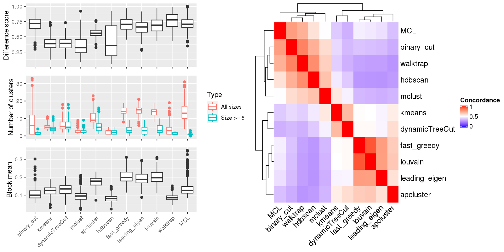

Figure 1.Compare clustering results. Left panel: The difference score, number of clusters and the block mean of different clusterings. Right panel: Concordance between clustering methods. The concordance measures how similar two clusterings are. The definition of the concordance score can be found here.

Table 1.Number of clusters identified by each clustering method. Numbers in the table indicate the number of clusters. The numbers inside the parentheses are the number of clusters with size >= 5.
| ID | binary_cut | kmeans | pam | dynamicTreeCut | mclust | apcluster | hdbscan | fast_greedy | louvain | walktrap | MCL | Details |
|---|---|---|---|---|---|---|---|---|---|---|---|---|
| E-GEOD-101794_g2_g1 | 7(2) | 3(3) | 2(2) | 4(4) | 2(2) | 7(4) | 3(3) | 12(2) | 11(2) | 1(1) | 8(2) | view |
| E-GEOD-10718_A-AFFY-44_g5_g6 | 1(1) | 4(2) | 3(2) | 3(3) | 2(2) | 8(2) | 1(1) | 15(0) | 14(0) | 1(1) | 13(1) | view |
| E-GEOD-11285_A-AFFY-44_g3_g4 | 1(1) | 4(4) | 2(2) | 5(5) | 2(2) | 7(5) | 1(1) | 14(4) | 14(3) | 2(1) | 11(1) | view |
| E-GEOD-11348_A-AFFY-44_g6_g3 | 14(2) | 5(5) | 2(2) | 9(9) | 3(3) | 14(6) | 1(1) | 14(5) | 14(6) | 6(2) | 10(2) | view |
| E-GEOD-11408_A-AFFY-1_g1_g2 | 1(1) | 9(9) | 4(4) | 15(15) | 3(3) | 22(14) | 4(4) | 12(6) | 12(9) | 13(3) | 15(2) | view |
| E-GEOD-11783_A-AFFY-44_g1_g2 | 17(2) | 4(4) | 2(2) | 10(10) | 3(3) | 12(8) | 3(3) | 11(5) | 12(5) | 9(2) | 13(1) | view |
| E-GEOD-11886_A-AFFY-44_g3_g1 | 5(2) | 3(3) | 2(2) | 5(5) | 2(2) | 8(2) | 1(1) | 11(3) | 11(3) | 2(1) | 8(1) | view |
| E-GEOD-11903_A-AFFY-37_g7_g10 | 1(1) | 4(3) | 4(3) | 6(5) | 1(1) | 8(4) | 1(1) | 16(1) | 14(3) | 1(1) | 8(1) | view |
| E-GEOD-11903_A-AFFY-37_g7_g9 | 13(3) | 7(6) | 6(6) | 10(10) | 5(4) | 18(11) | 3(3) | 14(6) | 12(8) | 1(1) | 14(2) | view |
| E-GEOD-12265_A-AFFY-44_g1_g4 | 1(1) | 6(5) | 2(2) | 7(7) | 2(2) | 12(6) | 3(3) | 14(4) | 14(3) | 6(2) | 10(1) | view |
| E-GEOD-12773_A-AFFY-44_g1_g2 | 1(1) | 4(3) | 3(2) | 3(3) | 2(2) | 6(2) | 1(1) | 12(2) | 12(2) | 1(1) | 6(1) | view |
| E-GEOD-12791_A-AFFY-33_g3_g1 | 15(2) | 6(6) | 2(2) | 7(7) | 2(2) | 8(5) | 1(1) | 14(3) | 14(3) | 6(2) | 14(1) | view |
| E-GEOD-12791_A-AFFY-33_g3_g2 | 15(3) | 6(6) | 5(5) | 8(8) | 4(4) | 9(6) | 3(3) | 14(5) | 11(4) | 5(1) | 15(2) | view |
| E-GEOD-13274_A-AFFY-44_g1_g3 | 8(1) | 3(2) | 2(1) | 4(4) | 1(1) | 8(1) | 1(1) | 16(0) | 15(0) | 5(1) | 18(1) | view |
| E-GEOD-13637_A-AFFY-44_g1_g2 | 1(1) | 7(6) | 3(3) | 10(10) | 4(4) | 14(9) | 3(3) | 11(7) | 11(7) | 1(1) | 10(1) | view |
| E-GEOD-13637_A-AFFY-44_g1_g9 | 1(1) | 8(8) | 2(2) | 8(8) | 2(2) | 14(8) | 1(1) | 16(5) | 16(5) | 1(1) | 14(1) | view |
| E-GEOD-13637_A-AFFY-44_g5_g1 | 1(1) | 5(5) | 2(2) | 8(8) | 2(2) | 12(7) | 1(1) | 16(4) | 15(5) | 1(1) | 10(1) | view |
| E-GEOD-13762_A-AFFY-44_g3_g2 | 5(2) | 3(3) | 2(2) | 3(3) | 2(2) | 4(3) | 3(3) | 11(2) | 10(2) | 2(1) | 14(1) | view |
| E-GEOD-13887_A-AFFY-44_g3_g2 | 14(2) | 3(3) | 2(2) | 4(4) | 2(2) | 8(3) | 3(3) | 16(2) | 15(2) | 7(2) | 21(1) | view |
| E-GEOD-13909_A-AFFY-44_g3_g4 | 1(1) | 5(5) | 2(2) | 9(9) | 3(3) | 14(7) | 3(3) | 11(5) | 11(6) | 2(1) | 7(1) | view |
| E-GEOD-13987_A-AFFY-44_g5_g6 | 1(1) | 4(4) | 4(4) | 4(4) | 2(2) | 9(4) | 3(3) | 13(3) | 13(3) | 1(1) | 6(1) | view |
| E-GEOD-1417_A-AFFY-33_g1_g2 | 1(1) | 5(5) | 3(3) | 10(10) | 3(3) | 17(7) | 3(3) | 17(6) | 14(6) | 4(1) | 17(1) | view |
| E-GEOD-14580_A-AFFY-44_g2_g3 | 11(3) | 5(5) | 3(3) | 8(8) | 4(4) | 9(7) | 4(4) | 13(6) | 12(6) | 4(2) | 25(2) | view |
| E-GEOD-15811_A-AFFY-44_g1_g2 | 1(1) | 6(6) | 2(2) | 7(7) | 2(2) | 10(9) | 3(3) | 14(4) | 12(5) | 8(2) | 10(2) | view |
| E-GEOD-15811_A-AFFY-44_g1_g3 | 9(2) | 4(4) | 2(2) | 4(4) | 2(2) | 7(4) | 3(2) | 14(3) | 14(3) | 5(1) | 13(1) | view |
| E-GEOD-15811_A-AFFY-44_g1_g4 | 15(2) | 5(5) | 2(2) | 9(9) | 3(3) | 12(10) | 3(2) | 12(5) | 12(5) | 13(2) | 17(2) | view |
| E-GEOD-1615_A-AFFY-33_g6_g5 | 1(1) | 5(5) | 2(2) | 6(6) | 6(4) | 9(5) | 3(3) | 12(4) | 14(4) | 1(1) | 5(1) | view |
| E-GEOD-16837_A-AFFY-44_g22_g11 | 1(1) | 4(4) | 2(2) | 7(7) | 4(4) | 14(6) | 4(4) | 13(5) | 13(6) | 1(1) | 7(1) | view |
| E-GEOD-16837_A-AFFY-44_g22_g21 | 1(1) | 5(5) | 3(3) | 7(7) | 3(3) | 16(9) | 3(2) | 15(4) | 15(4) | 1(1) | 9(1) | view |
| E-GEOD-16837_A-AFFY-44_g22_g29 | 1(1) | 6(6) | 2(2) | 7(7) | 4(4) | 14(6) | 3(3) | 14(5) | 13(4) | 1(1) | 12(1) | view |
| E-GEOD-16837_A-AFFY-44_g22_g3 | 1(1) | 4(4) | 2(2) | 8(8) | 2(2) | 11(6) | 1(1) | 18(3) | 18(3) | 1(1) | 10(1) | view |
| E-GEOD-16837_A-AFFY-44_g22_g4 | 1(1) | 4(4) | 2(2) | 5(4) | 3(3) | 10(4) | 1(1) | 18(1) | 16(2) | 1(1) | 8(1) | view |
| E-GEOD-16879_A-AFFY-44_g13_g1 | 1(1) | 6(6) | 2(2) | 11(11) | 4(4) | 17(9) | 3(3) | 14(6) | 14(8) | 9(2) | 15(2) | view |
| E-GEOD-16879_A-AFFY-44_g13_g10 | 13(2) | 4(4) | 2(2) | 6(6) | 3(3) | 8(8) | 3(2) | 13(5) | 12(5) | 7(2) | 18(1) | view |
| E-GEOD-16879_A-AFFY-44_g13_g12 | 13(3) | 4(4) | 4(4) | 6(6) | 4(4) | 8(6) | 4(4) | 12(5) | 12(5) | 4(2) | 21(2) | view |
| E-GEOD-17156_A-AFFY-37_g4_g10 | 1(1) | 6(5) | 2(2) | 5(5) | 2(2) | 9(5) | 3(3) | 13(3) | 12(3) | 11(2) | 11(2) | view |
| E-GEOD-18791_A-AFFY-44_g11_g2 | 1(1) | 4(4) | 2(2) | 4(4) | 2(2) | 8(3) | 1(1) | 18(0) | 17(1) | 1(1) | 8(1) | view |
| E-GEOD-18791_A-AFFY-44_g11_g6 | 13(2) | 5(5) | 2(2) | 7(7) | 3(3) | 9(7) | 4(3) | 14(4) | 14(4) | 8(2) | 11(2) | view |
| E-GEOD-19018_A-AFFY-44_g1_g3 | 4(1) | 4(3) | 2(2) | 3(3) | 1(1) | 6(2) | 1(1) | 14(0) | 14(0) | 4(1) | 14(1) | view |
| E-GEOD-19018_A-AFFY-44_g2_g4 | 8(2) | 3(3) | 2(2) | 4(4) | 3(3) | 7(2) | 1(1) | 12(2) | 11(1) | 3(1) | 10(1) | view |
| E-GEOD-22278_A-AFFY-41_g5_g1 | 2(2) | 4(4) | 2(2) | 4(4) | 2(2) | 7(4) | 3(2) | 12(3) | 12(2) | 5(2) | 11(2) | view |
| E-GEOD-22385_A-AFFY-37_g1_g2 | 9(2) | 3(3) | 2(2) | 6(6) | 5(4) | 11(6) | 3(3) | 9(4) | 8(3) | 10(2) | 15(2) | view |
| E-GEOD-23764_A-AFFY-44_g4_g2 | 15(3) | 4(4) | 2(2) | 5(5) | 3(3) | 8(6) | 3(2) | 11(3) | 11(3) | 10(2) | 11(2) | view |
| E-GEOD-23930_A-AGIL-28_g2_g4 | 4(1) | 3(2) | 2(2) | 3(3) | 2(1) | 7(3) | 1(1) | 17(1) | 17(0) | 2(1) | 10(1) | view |
| E-GEOD-24592_A-AFFY-37_g1_g3 | 1(1) | 5(5) | 2(2) | 7(7) | 2(2) | 12(5) | 3(3) | 12(5) | 12(6) | 2(1) | 8(1) | view |
| E-GEOD-24592_A-AFFY-37_g4_g3 | 1(1) | 4(4) | 3(3) | 4(4) | 6(4) | 8(3) | 1(1) | 13(2) | 13(2) | 1(1) | 7(1) | view |
| E-GEOD-24592_A-AFFY-37_g6_g5 | 1(1) | 5(5) | 3(3) | 7(7) | 3(3) | 9(7) | 1(1) | 14(5) | 13(5) | 2(1) | 6(1) | view |
| E-GEOD-26370_A-AFFY-37_g4_g3 | 18(1) | 6(5) | 2(2) | 6(6) | 2(2) | 11(7) | 1(1) | 17(5) | 15(5) | 5(2) | 23(1) | view |
| E-GEOD-26656_A-AFFY-44_g3_g1 | 1(1) | 6(6) | 4(4) | 7(7) | 2(2) | 11(5) | 1(1) | 12(4) | 12(5) | 1(1) | 9(1) | view |
| E-GEOD-26656_A-AFFY-44_g4_g2 | 1(1) | 3(3) | 3(3) | 3(2) | 1(1) | 6(3) | 1(1) | 14(0) | 13(0) | 1(1) | 11(1) | view |
| E-GEOD-26834_A-AFFY-37_g1_g4 | 7(3) | 4(4) | 3(3) | 6(6) | 2(2) | 8(3) | 3(2) | 12(3) | 13(3) | 6(2) | 16(1) | view |
| E-GEOD-28784_A-AFFY-33_g2_g1 | 6(2) | 3(2) | 2(2) | 4(4) | 1(1) | 8(4) | 1(1) | 15(1) | 15(1) | 2(1) | 13(1) | view |
| E-GEOD-28784_A-AFFY-33_g2_g3 | 15(1) | 5(5) | 4(4) | 6(6) | 2(2) | 12(5) | 3(3) | 14(4) | 13(5) | 3(1) | 12(2) | view |
| E-GEOD-29137_A-AFFY-44_g4_g3 | 7(2) | 4(4) | 2(2) | 5(5) | 3(3) | 8(4) | 2(2) | 16(3) | 14(3) | 3(1) | 11(1) | view |
| E-GEOD-30531_A-AFFY-44_g4_g9 | 1(1) | 5(4) | 2(2) | 4(4) | 2(2) | 7(3) | 1(1) | 15(1) | 15(1) | 1(1) | 9(1) | view |
| E-GEOD-32876_A-AFFY-44_g1_g2 | 1(1) | 5(5) | 3(3) | 5(5) | 1(1) | 9(4) | 1(1) | 15(3) | 15(3) | 2(1) | 8(1) | view |
| E-GEOD-3307_A-AFFY-33_g1_g13 | 3(2) | 7(6) | 2(2) | 8(8) | 3(2) | 11(8) | 1(1) | 12(6) | 14(4) | 8(2) | 17(2) | view |
| E-GEOD-33294_g1_g2 | 17(2) | 4(4) | 2(2) | 5(5) | 2(2) | 9(3) | 3(3) | 14(2) | 12(3) | 7(2) | 21(1) | view |
| E-GEOD-34635_A-AFFY-44_g1_g5 | 1(1) | 5(3) | 4(3) | 4(4) | 3(2) | 9(5) | 1(1) | 14(3) | 13(3) | 1(1) | 7(1) | view |
| E-GEOD-40613_A-AFFY-44_g4_g3 | 1(1) | 4(4) | 3(3) | 3(3) | 1(1) | 7(4) | 1(1) | 18(0) | 16(0) | 2(1) | 17(1) | view |
| E-GEOD-40885_A-AFFY-44_g2_g1 | 1(1) | 6(6) | 2(2) | 7(7) | 3(3) | 13(9) | 3(3) | 10(6) | 10(5) | 3(2) | 6(2) | view |
| E-GEOD-40986_A-AFFY-44_g2_g1 | 13(1) | 6(5) | 3(2) | 5(5) | 2(2) | 10(5) | 1(1) | 16(3) | 16(3) | 5(1) | 15(1) | view |
| E-GEOD-4183_A-AFFY-44_g3_g2 | 10(2) | 3(3) | 2(2) | 3(3) | 2(1) | 5(4) | 3(3) | 17(1) | 17(1) | 4(1) | 17(1) | view |
| E-GEOD-42619_A-AGIL-28_g8_g2 | 1(1) | 4(2) | 4(4) | 3(3) | 1(1) | 10(3) | 1(1) | 15(3) | 13(3) | 2(1) | 8(1) | view |
| E-GEOD-44384_g1_g2 | 21(1) | 6(5) | 2(2) | 7(7) | 2(2) | 13(6) | 1(1) | 16(4) | 16(4) | 2(1) | 18(1) | view |
| E-GEOD-44408_A-AFFY-37_g1_g3 | 1(1) | 6(6) | 2(2) | 8(8) | 7(7) | 12(7) | 3(3) | 10(5) | 11(5) | 3(2) | 11(1) | view |
| E-GEOD-45757_A-AFFY-37_g19_g18 | 10(2) | 4(3) | 3(3) | 3(3) | 1(1) | 7(2) | 3(3) | 14(0) | 12(0) | 3(1) | 14(2) | view |
| E-GEOD-45757_A-AFFY-37_g21_g20 | 9(2) | 5(4) | 3(3) | 6(6) | 1(1) | 7(4) | 2(2) | 19(1) | 19(1) | 6(2) | 24(0) | view |
| E-GEOD-45757_A-AFFY-37_g37_g36 | 19(1) | 5(4) | 2(2) | 4(4) | 2(2) | 7(5) | 1(1) | 17(1) | 17(1) | 4(1) | 18(1) | view |
| E-GEOD-45757_A-AFFY-37_g41_g40 | 10(2) | 4(3) | 2(2) | 3(3) | 1(1) | 6(2) | 4(4) | 11(0) | 11(0) | 7(3) | 21(0) | view |
| E-GEOD-45757_A-AFFY-37_g43_g42 | 11(2) | 6(6) | 2(2) | 7(7) | 3(3) | 12(9) | 3(3) | 13(6) | 13(6) | 5(2) | 12(1) | view |
| E-GEOD-45757_A-AFFY-37_g45_g44 | 13(3) | 4(4) | 3(3) | 6(6) | 3(3) | 9(7) | 3(2) | 15(4) | 14(4) | 6(1) | 12(1) | view |
| E-GEOD-45757_A-AFFY-37_g5_g4 | 9(2) | 5(5) | 2(2) | 5(5) | 2(2) | 10(7) | 3(2) | 13(5) | 14(3) | 5(2) | 15(1) | view |
| E-GEOD-4600_A-AFFY-44_g2_g1 | 11(2) | 5(4) | 2(2) | 6(6) | 2(2) | 8(6) | 4(3) | 14(4) | 14(4) | 7(2) | 14(1) | view |
| E-GEOD-46538_A-AFFY-44_g3_g1 | 1(1) | 3(3) | 2(2) | 4(4) | 2(2) | 5(3) | 1(1) | 14(1) | 13(1) | 1(1) | 10(1) | view |
| E-GEOD-48121_A-AFFY-37_g3_g2 | 12(2) | 5(4) | 2(2) | 3(3) | 1(1) | 8(4) | 1(1) | 18(2) | 18(3) | 1(1) | 15(1) | view |
| E-GEOD-48258_A-AFFY-44_g3_g2 | 8(2) | 3(3) | 2(2) | 5(5) | 1(1) | 7(3) | 1(1) | 20(1) | 20(1) | 1(1) | 12(1) | view |
| E-GEOD-48350_A-AFFY-44_g6_g2 | 10(2) | 5(4) | 2(2) | 4(4) | 2(2) | 6(4) | 3(3) | 8(3) | 8(3) | 4(2) | 10(2) | view |
| E-GEOD-4883_A-AFFY-44_g1_g2 | 15(1) | 5(4) | 2(2) | 6(6) | 2(2) | 11(6) | 2(2) | 16(4) | 15(4) | 3(1) | 15(1) | view |
| E-GEOD-49016_A-AGIL-28_g2_g3 | 1(1) | 4(3) | 4(3) | 5(5) | 5(4) | 7(3) | 1(1) | 14(2) | 15(1) | 1(1) | 6(1) | view |
| E-GEOD-49284_A-AFFY-44_g13_g1 | 2(2) | 3(2) | 2(2) | 4(4) | 2(1) | 6(2) | 2(2) | 12(2) | 12(2) | 2(2) | 6(1) | view |
| E-GEOD-49284_A-AFFY-44_g21_g25 | 4(1) | 3(2) | 2(2) | 3(3) | 2(1) | 7(1) | 1(1) | 13(0) | 13(0) | 3(1) | 5(1) | view |
| E-GEOD-49284_A-AFFY-44_g21_g5 | 16(1) | 4(3) | 3(2) | 3(3) | 3(2) | 7(4) | 1(1) | 17(1) | 17(1) | 10(2) | 20(1) | view |
| E-GEOD-49284_A-AFFY-44_g31_g35 | 1(1) | 5(5) | 2(2) | 6(6) | 5(3) | 8(5) | 1(1) | 12(3) | 13(2) | 6(2) | 7(2) | view |
| E-GEOD-50693_A-AFFY-37_g1_g4 | 1(1) | 4(4) | 2(2) | 4(4) | 1(1) | 7(3) | 1(1) | 16(1) | 16(0) | 2(1) | 7(1) | view |
| E-GEOD-50693_A-AFFY-37_g5_g4 | 1(1) | 3(3) | 5(4) | 8(7) | 3(3) | 10(6) | 1(1) | 12(5) | 12(5) | 2(1) | 5(1) | view |
| E-GEOD-50694_A-AFFY-37_g5_g4 | 1(1) | 7(7) | 2(2) | 11(11) | 11(10) | 15(10) | 3(3) | 10(7) | 9(7) | 1(1) | 6(1) | view |
| E-GEOD-51261_g3_g1 | 19(4) | 3(3) | 2(2) | 8(8) | 3(3) | 11(8) | 4(4) | 13(4) | 12(4) | 5(2) | 26(2) | view |
| E-GEOD-51878_g1_g2 | 2(1) | 5(4) | 2(1) | 5(5) | 4(3) | 13(6) | 1(1) | 18(5) | 17(6) | 2(1) | 15(1) | view |
| E-GEOD-52127_A-AFFY-44_g1_g2 | 1(1) | 4(3) | 2(2) | 4(4) | 4(4) | 9(3) | 1(1) | 15(1) | 14(1) | 1(1) | 4(1) | view |
| E-GEOD-52471_A-AFFY-37_g4_g3 | 1(1) | 5(5) | 2(2) | 7(7) | 8(5) | 10(6) | 3(3) | 9(5) | 9(4) | 2(2) | 5(2) | view |
| E-GEOD-52778_g4_g3 | 1(1) | 9(9) | 2(2) | 13(13) | 2(2) | 18(11) | 3(3) | 12(7) | 11(8) | 2(1) | 8(1) | view |
| E-GEOD-5281_A-AFFY-44_g8_g2 | 19(1) | 4(3) | 2(2) | 5(5) | 2(2) | 8(4) | 3(3) | 14(3) | 14(3) | 6(1) | 21(1) | view |
| E-GEOD-52989_A-AFFY-33_g1_g2 | 1(1) | 5(5) | 3(3) | 7(7) | 1(1) | 8(5) | 1(1) | 16(3) | 14(3) | 2(1) | 12(1) | view |
| E-GEOD-53280_g2_g1 | 12(2) | 6(4) | 2(2) | 5(5) | 2(2) | 9(3) | 3(3) | 12(4) | 11(4) | 10(2) | 18(2) | view |
| E-GEOD-53295_A-AGIL-28_g1_g2 | 1(1) | 4(3) | 3(3) | 5(5) | 8(6) | 9(3) | 1(1) | 15(2) | 14(3) | 1(1) | 7(1) | view |
| E-GEOD-5370_A-AFFY-33_g2_g1 | 1(1) | 5(4) | 2(2) | 6(6) | 2(2) | 11(5) | 1(1) | 15(5) | 15(5) | 1(1) | 15(1) | view |
| E-GEOD-5418_A-AFFY-33_g3_g4 | 8(3) | 4(4) | 3(3) | 11(11) | 2(2) | 12(8) | 3(3) | 12(6) | 11(6) | 9(3) | 10(3) | view |
| E-GEOD-54846_g1_g2 | 1(1) | 4(4) | 4(4) | 5(5) | 2(2) | 9(3) | 3(3) | 15(2) | 13(2) | 1(1) | 7(1) | view |
| E-GEOD-55048_g1_g2 | 18(2) | 5(5) | 2(2) | 6(6) | 2(2) | 9(4) | 4(4) | 15(5) | 15(4) | 8(3) | 28(2) | view |
| E-GEOD-55123_g1_g2 | 1(1) | 3(3) | 5(5) | 6(6) | 4(4) | 10(4) | 3(3) | 13(5) | 13(4) | 1(1) | 11(1) | view |
| E-GEOD-55235_A-AFFY-33_g1_g2 | 9(2) | 6(6) | 2(2) | 11(11) | 3(3) | 15(9) | 4(4) | 13(6) | 13(7) | 6(2) | 10(2) | view |
| E-GEOD-55235_A-AFFY-33_g1_g3 | 7(2) | 8(8) | 2(2) | 13(13) | 4(4) | 15(11) | 4(4) | 14(6) | 14(6) | 6(2) | 12(2) | view |
| E-GEOD-55510_A-AFFY-44_g1_g2 | 1(1) | 5(5) | 2(2) | 6(6) | 2(2) | 9(7) | 3(3) | 12(4) | 10(5) | 3(2) | 6(2) | view |
| E-GEOD-56026_A-AFFY-44_g4_g1 | 1(1) | 5(5) | 2(2) | 9(9) | 3(3) | 13(9) | 3(3) | 11(4) | 8(5) | 5(2) | 12(2) | view |
| E-GEOD-56678_A-AGIL-28_g5_g2 | 1(1) | 8(8) | 3(3) | 9(9) | 4(4) | 18(8) | 4(4) | 14(8) | 14(9) | 1(1) | 11(1) | view |
| E-GEOD-56678_A-AGIL-28_g6_g3 | 1(1) | 8(7) | 5(4) | 13(13) | 2(2) | 19(12) | 3(3) | 12(6) | 10(8) | 7(3) | 9(2) | view |
| E-GEOD-56681_A-AFFY-33_g6_g5 | 16(2) | 7(6) | 2(2) | 13(13) | 4(4) | 16(12) | 4(3) | 14(7) | 16(6) | 15(2) | 19(2) | view |
| E-GEOD-56788_g2_g10 | 8(2) | 3(3) | 3(3) | 5(5) | 2(2) | 9(6) | 3(3) | 11(5) | 12(5) | 9(2) | 9(2) | view |
| E-GEOD-56788_g2_g12 | 11(1) | 5(5) | 2(2) | 4(4) | 1(1) | 10(6) | 1(1) | 16(3) | 16(3) | 2(2) | 16(1) | view |
| E-GEOD-56788_g2_g14 | 5(1) | 3(3) | 2(2) | 4(4) | 1(1) | 10(3) | 1(1) | 15(0) | 15(0) | 1(1) | 11(1) | view |
| E-GEOD-56788_g2_g15 | 10(2) | 4(2) | 2(2) | 3(3) | 2(2) | 4(3) | 3(3) | 12(1) | 12(1) | 3(1) | 13(1) | view |
| E-GEOD-56788_g2_g7 | 1(1) | 4(3) | 2(2) | 3(3) | 2(2) | 7(5) | 1(1) | 12(2) | 13(1) | 1(1) | 9(2) | view |
| E-GEOD-5681_A-AFFY-37_g4_g3 | 26(3) | 6(6) | 2(2) | 12(12) | 5(4) | 16(12) | 4(4) | 14(8) | 14(7) | 24(3) | 25(3) | view |
| E-GEOD-5741_A-AFFY-44_g1_g3 | 23(1) | 4(4) | 2(2) | 5(5) | 3(3) | 12(6) | 1(1) | 16(4) | 18(5) | 10(1) | 22(1) | view |
| E-GEOD-57463_A-AFFY-44_g2_g1 | 11(2) | 6(6) | 2(2) | 11(11) | 3(3) | 14(9) | 3(3) | 13(6) | 13(7) | 4(2) | 11(2) | view |
| E-GEOD-57494_g1_g3 | 1(1) | 5(3) | 4(3) | 6(6) | 1(1) | 11(4) | 1(1) | 14(2) | 13(2) | 2(1) | 13(2) | view |
| E-GEOD-57494_g2_g5 | 8(3) | 6(6) | 2(2) | 10(10) | 3(3) | 14(8) | 3(3) | 14(6) | 14(5) | 2(1) | 12(1) | view |
| E-GEOD-57896_g5_g7 | 7(1) | 3(3) | 2(2) | 7(7) | 2(2) | 10(5) | 1(1) | 14(4) | 13(4) | 3(1) | 10(1) | view |
| E-GEOD-57896_g5_g9 | 11(4) | 5(4) | 5(4) | 6(5) | 4(3) | 9(6) | 3(3) | 11(5) | 10(5) | 3(2) | 19(4) | view |
| E-GEOD-57896_g6_g8 | 13(2) | 6(4) | 2(1) | 6(5) | 5(3) | 10(7) | 3(3) | 14(5) | 13(5) | 2(2) | 20(3) | view |
| E-GEOD-57945_g6_g3 | 15(2) | 5(4) | 3(2) | 6(5) | 2(2) | 11(4) | 3(2) | 14(3) | 13(4) | 5(1) | 20(1) | view |
| E-GEOD-57945_g6_g5 | 16(2) | 4(4) | 2(2) | 4(4) | 2(2) | 10(3) | 3(3) | 15(2) | 14(2) | 10(2) | 26(2) | view |
| E-GEOD-59089_g1_g3 | 1(1) | 4(3) | 2(2) | 5(4) | 2(2) | 8(4) | 3(3) | 15(3) | 14(3) | 1(1) | 4(1) | view |
| E-GEOD-59765_g1_g2 | 10(2) | 5(5) | 2(2) | 6(6) | 3(3) | 8(7) | 3(3) | 15(5) | 16(5) | 6(2) | 14(1) | view |
| E-GEOD-59765_g1_g3 | 9(2) | 4(3) | 2(2) | 4(4) | 2(1) | 8(2) | 3(3) | 14(2) | 14(2) | 2(1) | 18(1) | view |
| E-GEOD-60052_g1_g2 | 1(1) | 3(3) | 2(2) | 4(4) | 1(1) | 6(3) | 1(1) | 16(1) | 16(0) | 1(1) | 11(1) | view |
| E-GEOD-60340_g7_g4 | 1(1) | 3(3) | 2(2) | 3(3) | 1(1) | 6(2) | 1(1) | 14(0) | 13(0) | 2(1) | 6(1) | view |
| E-GEOD-60424_g25_g26 | 1(1) | 3(3) | 2(2) | 5(5) | 7(5) | 10(3) | 1(1) | 14(3) | 12(2) | 1(1) | 13(1) | view |
| E-GEOD-60424_g31_g32 | 1(1) | 5(4) | 2(2) | 5(5) | 2(2) | 12(5) | 1(1) | 14(4) | 15(2) | 2(1) | 8(2) | view |
| E-GEOD-60590_g2_g1 | 1(1) | 3(3) | 2(2) | 4(4) | 3(3) | 5(3) | 3(3) | 9(3) | 9(3) | 4(2) | 7(2) | view |
| E-GEOD-61130_g3_g2 | 1(1) | 5(5) | 2(2) | 9(9) | 3(3) | 14(7) | 3(3) | 14(7) | 14(6) | 1(1) | 12(1) | view |
| E-GEOD-61141_g2_g1 | 1(1) | 6(6) | 2(2) | 9(9) | 5(5) | 14(8) | 3(3) | 11(6) | 12(6) | 5(2) | 11(2) | view |
| E-GEOD-61141_g4_g3 | 1(1) | 4(3) | 2(2) | 7(7) | 8(5) | 9(5) | 3(3) | 13(4) | 12(5) | 2(2) | 4(2) | view |
| E-GEOD-61966_g3_g5 | 1(1) | 4(4) | 4(4) | 5(5) | 2(2) | 9(5) | 3(3) | 15(3) | 14(3) | 2(1) | 9(1) | view |
| E-GEOD-62673_A-AFFY-37_g6_g10 | 13(2) | 5(4) | 2(2) | 4(4) | 2(2) | 10(3) | 3(3) | 12(3) | 12(3) | 7(1) | 20(1) | view |
| E-GEOD-62673_A-AFFY-37_g6_g12 | 15(2) | 4(4) | 2(2) | 3(3) | 2(2) | 7(4) | 3(2) | 14(2) | 14(2) | 8(2) | 18(1) | view |
| E-GEOD-62673_A-AFFY-37_g6_g16 | 16(2) | 3(3) | 2(2) | 4(4) | 2(2) | 5(4) | 4(4) | 17(2) | 17(2) | 10(2) | 22(1) | view |
| E-GEOD-62673_A-AFFY-37_g6_g17 | 15(1) | 5(4) | 3(3) | 6(5) | 2(2) | 8(3) | 4(4) | 14(2) | 14(2) | 6(3) | 22(1) | view |
| E-GEOD-62673_A-AFFY-37_g6_g18 | 13(3) | 4(4) | 3(3) | 5(5) | 3(3) | 7(5) | 5(4) | 13(4) | 13(3) | 17(2) | 21(2) | view |
| E-GEOD-62673_A-AFFY-37_g6_g21 | 14(4) | 5(5) | 2(2) | 6(6) | 3(3) | 9(7) | 5(4) | 12(5) | 13(4) | 7(3) | 26(2) | view |
| E-GEOD-62673_A-AFFY-37_g6_g7 | 16(2) | 2(2) | 2(2) | 4(4) | 2(2) | 8(4) | 3(3) | 17(3) | 15(3) | 8(2) | 20(2) | view |
| E-GEOD-62854_g2_g1 | 1(1) | 5(5) | 2(2) | 5(5) | 2(2) | 9(4) | 1(1) | 16(1) | 15(3) | 1(1) | 13(1) | view |
| E-GEOD-63085_g4_g1 | 2(2) | 5(4) | 2(2) | 4(4) | 3(3) | 7(3) | 3(2) | 9(3) | 9(4) | 4(2) | 4(2) | view |
| E-GEOD-63085_g4_g3 | 1(1) | 6(6) | 2(2) | 8(8) | 3(3) | 12(10) | 3(2) | 11(7) | 12(7) | 7(2) | 14(2) | view |
| E-GEOD-65335_g2_g1 | 10(1) | 6(5) | 2(2) | 8(8) | 2(2) | 11(6) | 3(2) | 15(5) | 14(5) | 7(2) | 18(1) | view |
| E-GEOD-66048_A-AFFY-37_g14_g16 | 1(1) | 5(3) | 4(3) | 4(4) | 1(1) | 11(1) | 1(1) | 16(0) | 16(0) | 2(1) | 10(1) | view |
| E-GEOD-66048_A-AFFY-37_g4_g5 | 1(1) | 7(7) | 7(7) | 11(11) | 2(2) | 17(7) | 1(1) | 11(7) | 11(7) | 1(1) | 12(1) | view |
| E-GEOD-6631_A-AFFY-1_g1_g2 | 9(1) | 4(3) | 2(2) | 3(3) | 1(1) | 8(2) | 3(2) | 12(2) | 12(2) | 3(2) | 18(1) | view |
| E-GEOD-6691_A-AFFY-33_g5_g4 | 11(2) | 4(4) | 2(2) | 4(4) | 2(2) | 6(3) | 3(2) | 9(3) | 9(3) | 5(1) | 11(1) | view |
| E-GEOD-6802_A-AFFY-37_g1_g3 | 1(1) | 3(3) | 3(3) | 5(5) | 1(1) | 7(4) | 3(3) | 16(2) | 15(2) | 2(1) | 11(1) | view |
| E-GEOD-68919_g2_g1 | 11(2) | 4(3) | 2(1) | 5(4) | 3(2) | 9(5) | 3(3) | 19(3) | 19(3) | 1(1) | 19(2) | view |
| E-GEOD-6907_A-AFFY-41_g1_g10 | 13(1) | 4(4) | 2(2) | 5(5) | 2(2) | 9(4) | 3(3) | 13(2) | 13(2) | 7(1) | 12(1) | view |
| E-GEOD-6907_A-AFFY-41_g1_g7 | 1(1) | 4(4) | 2(2) | 4(4) | 2(2) | 11(5) | 1(1) | 18(2) | 17(2) | 2(1) | 10(1) | view |
| E-GEOD-6907_A-AFFY-41_g1_g8 | 14(2) | 3(3) | 2(2) | 4(4) | 2(2) | 8(3) | 3(3) | 16(3) | 16(2) | 4(1) | 17(2) | view |
| E-GEOD-69597_g4_g2 | 1(1) | 6(5) | 3(3) | 7(7) | 3(3) | 11(5) | 3(3) | 15(4) | 13(4) | 1(1) | 6(1) | view |
| E-GEOD-69597_g4_g6 | 1(1) | 3(3) | 4(4) | 4(4) | 2(2) | 9(5) | 3(3) | 12(2) | 12(3) | 1(1) | 11(1) | view |
| E-GEOD-7114_A-AFFY-1_g2_g1 | 1(1) | 3(3) | 2(2) | 4(4) | 3(3) | 8(2) | 1(1) | 15(0) | 15(0) | 1(1) | 12(1) | view |
| E-GEOD-71595_g2_g1 | 5(2) | 4(3) | 2(2) | 5(5) | 2(2) | 7(4) | 1(1) | 12(1) | 12(1) | 1(1) | 6(1) | view |
| E-GEOD-75797_g4_g3 | 1(1) | 6(6) | 2(2) | 8(8) | 3(3) | 15(6) | 3(2) | 15(4) | 14(4) | 4(1) | 14(1) | view |
| E-GEOD-7835_A-AFFY-44_g1_g5 | 1(1) | 3(3) | 2(2) | 5(5) | 1(1) | 7(3) | 1(1) | 16(1) | 16(1) | 3(1) | 9(1) | view |
| E-GEOD-8961_A-AFFY-44_g2_g6 | 1(1) | 7(7) | 5(5) | 10(10) | 3(3) | 13(10) | 3(3) | 15(7) | 13(6) | 1(1) | 11(1) | view |
| E-GEOD-8977_A-AFFY-44_g1_g2 | 7(2) | 3(3) | 2(2) | 3(3) | 5(2) | 5(4) | 1(1) | 11(1) | 10(2) | 1(1) | 9(1) | view |
| E-GEOD-95132_g1_g2 | 5(2) | 3(2) | 3(2) | 5(4) | 4(2) | 5(2) | 1(1) | 11(2) | 10(1) | 2(1) | 9(1) | view |
| E-GEOD-9723_A-AFFY-33_g1_g2 | 1(1) | 4(4) | 2(2) | 5(5) | 2(2) | 12(4) | 1(1) | 14(3) | 14(4) | 2(1) | 8(1) | view |
| E-MEXP-1014_A-AFFY-41_g5_g3 | 13(2) | 3(3) | 2(2) | 3(3) | 2(2) | 6(3) | 3(3) | 12(1) | 12(1) | 7(2) | 13(1) | view |
| E-MEXP-1230_A-AFFY-44_g2_g1 | 12(2) | 6(5) | 2(2) | 6(6) | 3(3) | 11(6) | 1(1) | 14(3) | 14(4) | 1(1) | 12(1) | view |
| E-MEXP-1230_A-AFFY-44_g2_g3 | 4(1) | 6(5) | 2(2) | 8(8) | 6(6) | 12(4) | 1(1) | 15(3) | 12(3) | 1(1) | 7(2) | view |
| E-MEXP-1274_A-AFFY-37_g3_g1 | 1(1) | 4(4) | 2(2) | 5(5) | 2(2) | 11(7) | 1(1) | 14(5) | 15(5) | 4(1) | 9(1) | view |
| E-MEXP-1274_A-AFFY-37_g4_g2 | 14(1) | 5(5) | 2(2) | 8(8) | 2(2) | 15(5) | 3(2) | 16(6) | 14(8) | 4(2) | 17(1) | view |
| E-MEXP-1509_A-AFFY-37_g1_g2 | 1(1) | 3(3) | 2(2) | 4(4) | 2(2) | 8(4) | 3(3) | 14(2) | 14(2) | 1(1) | 7(1) | view |
| E-MEXP-1509_A-AFFY-37_g1_g3 | 1(1) | 6(6) | 2(2) | 11(11) | 3(3) | 14(8) | 3(2) | 14(5) | 15(8) | 6(1) | 11(1) | view |
| E-MEXP-1599_A-AFFY-44_g4_g3 | 1(1) | 3(3) | 2(2) | 4(3) | 1(1) | 8(3) | 1(1) | 16(0) | 16(0) | 2(1) | 10(1) | view |
| E-MEXP-1601_A-AFFY-44_g3_g2 | 19(2) | 4(4) | 2(2) | 6(6) | 3(3) | 14(5) | 3(3) | 16(4) | 16(6) | 16(2) | 25(2) | view |
| E-MEXP-2000_A-AFFY-33_g3_g2 | 10(1) | 4(4) | 2(2) | 2(2) | 2(2) | 7(2) | 1(1) | 17(1) | 17(1) | 1(1) | 13(1) | view |
| E-MEXP-3521_A-AFFY-33_g4_g1 | 10(5) | 6(6) | 2(2) | 19(19) | 2(2) | 20(16) | 3(3) | 11(8) | 11(9) | 17(3) | 24(3) | view |
| E-MEXP-3521_A-AFFY-33_g4_g3 | 24(2) | 7(7) | 2(2) | 18(18) | 2(2) | 21(14) | 4(4) | 13(7) | 13(9) | 14(2) | 20(2) | view |
| E-MEXP-3521_A-AFFY-33_g8_g5 | 12(4) | 4(4) | 2(2) | 9(9) | 4(4) | 14(11) | 4(4) | 15(6) | 12(7) | 17(2) | 21(2) | view |
| E-MEXP-3521_A-AFFY-33_g8_g7 | 17(4) | 8(8) | 3(3) | 20(20) | 7(7) | 21(17) | 4(4) | 11(8) | 12(8) | 24(3) | 29(3) | view |
| E-MEXP-548_A-AFFY-33_g1_g2 | 1(1) | 4(4) | 2(2) | 6(6) | 2(2) | 13(3) | 1(1) | 17(4) | 17(4) | 3(1) | 13(1) | view |
| E-MEXP-560_A-AFFY-37_g2_g1 | 1(1) | 5(5) | 2(2) | 11(11) | 4(4) | 16(11) | 3(2) | 14(7) | 13(7) | 6(2) | 16(1) | view |
| E-MEXP-563_A-AFFY-44_g1_g4 | 9(1) | 4(3) | 3(2) | 3(3) | 1(1) | 7(2) | 3(2) | 18(0) | 18(0) | 7(1) | 19(1) | view |
| E-MEXP-563_A-AFFY-44_g1_g5 | 9(2) | 3(3) | 2(2) | 3(3) | 2(2) | 5(4) | 3(2) | 10(2) | 10(2) | 3(2) | 14(1) | view |
| E-MEXP-567_A-AFFY-37_g3_g2 | 14(3) | 5(5) | 2(2) | 9(9) | 5(5) | 14(9) | 3(3) | 8(3) | 8(5) | 11(3) | 12(2) | view |
| E-MEXP-858_A-AFFY-44_g1_g5 | 1(1) | 5(5) | 2(2) | 8(8) | 2(2) | 13(8) | 3(3) | 14(6) | 13(6) | 2(1) | 8(1) | view |
| E-MTAB-2746_A-AFFY-33_g1_g2 | 6(1) | 3(2) | 2(1) | 6(5) | 2(1) | 7(3) | 1(1) | 15(1) | 15(1) | 4(1) | 14(2) | view |
| E-MTAB-2758_g3_g7 | 8(2) | 4(3) | 3(2) | 3(3) | 4(3) | 6(3) | 3(3) | 12(1) | 12(1) | 8(2) | 13(2) | view |
| E-MTAB-2994_A-GEOD-16686_g3_g1 | 1(1) | 4(3) | 4(3) | 4(4) | 2(2) | 7(4) | 1(1) | 14(3) | 15(2) | 1(1) | 11(1) | view |
| E-MTAB-3101_g2_g1 | 1(1) | 5(4) | 3(3) | 3(3) | 1(1) | 7(3) | 3(3) | 17(1) | 15(1) | 2(1) | 12(1) | view |
| E-MTAB-3689_g4_g2 | 1(1) | 5(5) | 2(2) | 8(8) | 6(6) | 11(7) | 3(3) | 9(4) | 9(3) | 3(2) | 5(1) | view |
| E-MTAB-3731_A-AFFY-33_g1_g10 | 1(1) | 6(6) | 6(5) | 9(9) | 2(2) | 12(8) | 3(2) | 16(6) | 16(6) | 3(1) | 15(1) | view |
| E-MTAB-3731_A-AFFY-33_g1_g16 | 1(1) | 8(7) | 2(2) | 10(10) | 3(3) | 13(6) | 3(3) | 16(8) | 16(6) | 7(1) | 16(1) | view |
| E-MTAB-3731_A-AFFY-33_g1_g24 | 1(1) | 6(6) | 2(2) | 16(16) | 4(4) | 20(14) | 3(3) | 15(7) | 13(7) | 2(1) | 9(1) | view |
| E-MTAB-3731_A-AFFY-33_g2_g11 | 16(5) | 9(9) | 2(2) | 12(12) | 3(3) | 17(14) | 3(2) | 12(7) | 12(7) | 5(2) | 28(2) | view |
| E-MTAB-3731_A-AFFY-33_g2_g17 | 13(1) | 5(4) | 2(2) | 5(5) | 1(1) | 6(6) | 1(1) | 16(3) | 17(3) | 5(2) | 23(2) | view |
| E-MTAB-3731_A-AFFY-33_g34_g44 | 16(1) | 3(3) | 2(2) | 5(5) | 2(2) | 7(5) | 3(2) | 18(3) | 16(3) | 2(1) | 17(1) | view |
| E-MTAB-3731_A-AFFY-33_g35_g45 | 13(1) | 5(4) | 2(2) | 4(4) | 2(2) | 9(5) | 3(2) | 17(3) | 16(3) | 4(2) | 18(1) | view |
| E-MTAB-3731_A-AFFY-33_g35_g55 | 1(1) | 6(5) | 6(6) | 9(9) | 2(2) | 13(5) | 3(3) | 16(6) | 15(6) | 3(1) | 16(1) | view |
| E-MTAB-3731_A-AFFY-33_g37_g47 | 8(2) | 3(3) | 2(2) | 4(4) | 2(2) | 6(4) | 3(2) | 16(2) | 16(1) | 3(2) | 14(1) | view |
| E-MTAB-3731_A-AFFY-33_g37_g57 | 12(1) | 4(4) | 2(2) | 5(5) | 2(2) | 9(5) | 1(1) | 20(3) | 18(4) | 5(2) | 18(2) | view |
| E-MTAB-3731_A-AFFY-33_g37_g67 | 15(1) | 5(4) | 2(2) | 5(5) | 2(2) | 8(6) | 1(1) | 18(4) | 17(3) | 5(2) | 18(1) | view |
| E-MTAB-3731_A-AFFY-33_g39_g49 | 33(1) | 7(7) | 2(2) | 11(11) | 4(4) | 15(12) | 3(3) | 16(7) | 15(9) | 8(2) | 24(1) | view |
| E-MTAB-3731_A-AFFY-33_g39_g59 | 34(2) | 9(9) | 2(2) | 13(13) | 5(5) | 20(12) | 3(3) | 12(9) | 12(10) | 9(2) | 26(1) | view |
| E-MTAB-3731_A-AFFY-33_g39_g69 | 29(2) | 8(7) | 2(2) | 12(12) | 3(3) | 17(11) | 1(1) | 15(8) | 14(9) | 9(1) | 22(1) | view |
| E-MTAB-3731_A-AFFY-33_g3_g18 | 7(2) | 4(3) | 2(2) | 4(4) | 1(1) | 8(2) | 1(1) | 16(2) | 16(2) | 4(1) | 16(1) | view |
| E-MTAB-3731_A-AFFY-33_g3_g25 | 17(2) | 5(5) | 2(2) | 12(12) | 2(2) | 16(11) | 1(1) | 14(8) | 14(9) | 6(1) | 15(1) | view |
| E-MTAB-3731_A-AFFY-33_g4_g12 | 23(1) | 8(7) | 2(2) | 9(9) | 2(2) | 16(7) | 4(4) | 14(9) | 12(9) | 6(1) | 16(1) | view |
| E-MTAB-3731_A-AFFY-33_g4_g19 | 1(1) | 9(9) | 11(10) | 14(14) | 4(4) | 22(15) | 3(3) | 14(8) | 15(8) | 6(1) | 14(1) | view |
| E-MTAB-3731_A-AFFY-33_g6_g21 | 13(3) | 4(4) | 2(2) | 4(4) | 3(2) | 8(4) | 3(3) | 13(3) | 12(3) | 5(2) | 23(2) | view |
| E-MTAB-3731_A-AFFY-33_g6_g27 | 1(1) | 6(6) | 7(6) | 11(11) | 2(2) | 15(10) | 1(1) | 15(6) | 13(7) | 1(1) | 17(1) | view |
| E-MTAB-3731_A-AFFY-33_g76_g105 | 1(1) | 6(5) | 2(2) | 11(11) | 2(2) | 15(8) | 3(3) | 13(5) | 12(6) | 5(1) | 14(1) | view |
| E-MTAB-3731_A-AFFY-33_g76_g86 | 1(1) | 4(4) | 2(2) | 5(5) | 2(2) | 8(3) | 1(1) | 16(2) | 16(1) | 1(1) | 12(1) | view |
| E-MTAB-3731_A-AFFY-33_g76_g95 | 12(2) | 4(4) | 4(4) | 5(5) | 1(1) | 7(3) | 3(3) | 13(3) | 12(3) | 3(1) | 9(1) | view |
| E-MTAB-3731_A-AFFY-33_g77_g106 | 1(1) | 5(5) | 2(2) | 9(9) | 2(2) | 13(5) | 1(1) | 16(6) | 16(6) | 5(1) | 11(1) | view |
| E-MTAB-3731_A-AFFY-33_g77_g87 | 14(1) | 3(3) | 2(2) | 8(8) | 3(3) | 13(6) | 3(2) | 16(5) | 15(6) | 8(1) | 15(1) | view |
| E-MTAB-3731_A-AFFY-33_g77_g96 | 1(1) | 5(4) | 2(2) | 7(7) | 3(3) | 12(6) | 3(3) | 15(4) | 14(4) | 4(1) | 11(1) | view |
| E-MTAB-3731_A-AFFY-33_g78_g97 | 1(1) | 3(3) | 2(2) | 4(3) | 4(4) | 9(3) | 1(1) | 18(0) | 17(0) | 1(1) | 11(1) | view |
| E-MTAB-3731_A-AFFY-33_g7_g15 | 18(1) | 8(7) | 2(2) | 15(15) | 3(3) | 18(12) | 3(2) | 15(8) | 12(9) | 4(2) | 18(1) | view |
| E-MTAB-3731_A-AFFY-33_g7_g22 | 20(3) | 8(8) | 2(2) | 14(14) | 2(2) | 21(12) | 1(1) | 10(8) | 11(8) | 3(2) | 19(1) | view |
| E-MTAB-3731_A-AFFY-33_g7_g28 | 18(1) | 8(7) | 2(2) | 11(11) | 2(2) | 17(11) | 3(3) | 11(7) | 12(7) | 3(2) | 17(1) | view |
| E-MTAB-3731_A-AFFY-33_g80_g109 | 1(1) | 6(6) | 6(5) | 9(9) | 5(4) | 14(7) | 3(2) | 15(7) | 14(7) | 7(2) | 23(1) | view |
| E-MTAB-3731_A-AFFY-33_g80_g89 | 18(3) | 8(8) | 2(2) | 14(14) | 4(4) | 21(13) | 3(3) | 14(7) | 13(8) | 5(2) | 24(1) | view |
| E-MTAB-3731_A-AFFY-33_g80_g99 | 1(1) | 4(3) | 3(2) | 6(6) | 2(2) | 9(3) | 1(1) | 15(3) | 15(3) | 4(1) | 12(1) | view |
| E-MTAB-3731_A-AFFY-33_g82_g101 | 17(2) | 7(7) | 2(2) | 12(12) | 4(4) | 15(11) | 3(3) | 16(7) | 14(8) | 5(1) | 16(1) | view |
| E-MTAB-3731_A-AFFY-33_g82_g111 | 26(1) | 7(6) | 2(2) | 11(11) | 2(2) | 14(11) | 3(3) | 15(7) | 14(7) | 6(2) | 22(1) | view |
| E-MTAB-3731_A-AFFY-33_g8_g29 | 1(1) | 7(7) | 2(2) | 10(10) | 3(3) | 16(9) | 3(3) | 14(8) | 11(8) | 1(1) | 8(1) | view |
| E-MTAB-3801_g2_g1 | 11(2) | 3(3) | 2(2) | 5(5) | 3(3) | 11(6) | 3(2) | 14(6) | 12(7) | 13(2) | 18(2) | view |
| E-MTAB-454_A-AFFY-33_g17_g18 | 4(1) | 5(2) | 2(2) | 5(5) | 2(1) | 9(2) | 1(1) | 13(3) | 12(2) | 2(1) | 8(1) | view |
| E-MTAB-4732_g2_g1 | 13(2) | 6(4) | 2(2) | 6(6) | 2(2) | 9(4) | 3(3) | 13(3) | 13(3) | 10(2) | 24(1) | view |
| E-MTAB-4811_g2_g1 | 15(2) | 3(3) | 2(2) | 4(4) | 2(2) | 8(4) | 3(2) | 13(3) | 14(2) | 13(2) | 18(2) | view |
| E-MTAB-5285_g4_g3 | 10(2) | 4(4) | 2(2) | 3(3) | 2(2) | 6(3) | 3(3) | 14(2) | 14(1) | 2(1) | 22(1) | view |
| E-MTAB-5316_g3_g2 | 1(1) | 6(5) | 5(5) | 6(6) | 2(2) | 10(4) | 1(1) | 14(5) | 13(5) | 4(1) | 10(1) | view |
| E-MTAB-5464_g5_g8 | 1(1) | 5(5) | 2(2) | 7(7) | 2(2) | 11(6) | 3(3) | 11(4) | 11(5) | 6(2) | 10(1) | view |
| E-MTAB-5464_g6_g3 | 14(2) | 4(4) | 2(2) | 5(5) | 2(2) | 8(5) | 3(3) | 12(2) | 12(2) | 5(2) | 16(1) | view |
| E-MTAB-5690_A-GEOD-16686_g4_g1 | 1(1) | 4(4) | 2(2) | 6(6) | 3(3) | 9(4) | 3(3) | 12(3) | 10(3) | 5(2) | 8(2) | view |
| E-MTAB-5690_A-GEOD-16686_g5_g2 | 1(1) | 5(5) | 2(2) | 6(6) | 3(3) | 13(4) | 1(1) | 14(6) | 13(6) | 1(1) | 4(1) | view |
| E-MTAB-5917_A-AFFY-44_g7_g2 | 1(1) | 4(4) | 2(2) | 4(4) | 5(5) | 7(5) | 3(3) | 13(2) | 14(2) | 1(1) | 9(1) | view |
| E-MTAB-5917_A-AFFY-44_g7_g3 | 7(3) | 4(4) | 2(2) | 6(6) | 2(2) | 8(7) | 3(3) | 10(3) | 9(3) | 6(2) | 10(2) | view |
| E-MTAB-5917_A-AFFY-44_g7_g4 | 6(2) | 5(4) | 2(2) | 4(4) | 2(2) | 5(4) | 3(3) | 14(3) | 14(3) | 5(2) | 10(1) | view |
| E-MTAB-5917_A-AFFY-44_g7_g6 | 6(2) | 3(3) | 3(3) | 4(3) | 2(2) | 7(4) | 3(3) | 12(2) | 12(2) | 3(1) | 15(2) | view |
| E-MTAB-6045_A-GEOD-16686_g15_g6 | 10(1) | 3(2) | 3(2) | 3(3) | 1(1) | 5(3) | 1(1) | 13(0) | 12(0) | 2(1) | 11(1) | view |
| E-MTAB-6045_A-GEOD-16686_g16_g7 | 7(1) | 3(1) | 2(1) | 3(2) | 3(1) | 7(3) | 1(1) | 15(0) | 15(0) | 2(1) | 12(1) | view |
| E-MTAB-6235_g5_g1 | 9(2) | 4(3) | 2(2) | 5(5) | 2(2) | 9(4) | 2(2) | 14(3) | 12(5) | 6(2) | 12(1) | view |
| E-MTAB-6235_g5_g2 | 6(2) | 5(3) | 2(2) | 4(4) | 3(3) | 10(3) | 2(2) | 12(4) | 12(5) | 5(2) | 11(1) | view |
| E-MTAB-6241_g6_g4 | 1(1) | 7(6) | 6(6) | 8(8) | 4(4) | 13(7) | 3(3) | 13(7) | 13(7) | 2(1) | 12(1) | view |
| E-MTAB-6241_g6_g5 | 1(1) | 3(3) | 2(2) | 4(4) | 1(1) | 8(3) | 1(1) | 16(1) | 16(1) | 2(1) | 13(1) | view |
| E-MTAB-6244_g2_g1 | 24(2) | 3(3) | 2(2) | 6(6) | 3(3) | 12(7) | 3(3) | 18(4) | 17(5) | 6(1) | 24(2) | view |
| E-MTAB-6264_g3_g2 | 7(2) | 3(3) | 2(2) | 4(4) | 3(3) | 5(4) | 2(2) | 12(2) | 12(2) | 1(1) | 14(1) | view |
| E-MTAB-6298_g12_g10 | 1(1) | 5(4) | 3(2) | 6(6) | 1(1) | 11(5) | 1(1) | 16(2) | 15(4) | 3(1) | 17(1) | view |
| E-MTAB-6298_g9_g7 | 9(1) | 5(4) | 2(2) | 4(4) | 2(2) | 9(4) | 1(1) | 15(2) | 13(2) | 4(1) | 12(1) | view |
| E-MTAB-6345_g1_g2 | 1(1) | 3(3) | 2(2) | 4(4) | 6(4) | 8(6) | 1(1) | 13(4) | 13(4) | 1(1) | 5(1) | view |
| E-MTAB-6555_g1_g2 | 1(1) | 3(3) | 2(2) | 5(4) | 5(3) | 8(2) | 1(1) | 15(0) | 14(1) | 1(1) | 6(1) | view |
| E-MTAB-6564_g4_g2 | 7(3) | 4(3) | 2(2) | 5(5) | 2(2) | 6(5) | 2(2) | 10(3) | 10(3) | 6(2) | 14(1) | view |
| E-MTAB-6607_g2_g1 | 1(1) | 7(7) | 7(7) | 8(8) | 6(6) | 16(5) | 1(1) | 14(6) | 11(5) | 1(1) | 8(1) | view |
| E-MTAB-6607_g2_g3 | 1(1) | 5(5) | 2(2) | 7(7) | 5(5) | 13(8) | 1(1) | 14(6) | 11(6) | 1(1) | 10(1) | view |
| E-MTAB-6623_g5_g4 | 1(1) | 6(6) | 5(5) | 7(7) | 3(3) | 11(6) | 3(3) | 15(5) | 15(6) | 2(1) | 12(1) | view |
| E-MTAB-6643_g2_g1 | 9(3) | 3(3) | 2(2) | 5(5) | 2(2) | 8(5) | 3(2) | 9(3) | 9(4) | 5(2) | 11(2) | view |
| E-MTAB-6647_g11_g12 | 14(2) | 6(6) | 2(2) | 9(9) | 2(2) | 15(9) | 3(2) | 14(6) | 12(8) | 4(2) | 17(1) | view |
| E-MTAB-6647_g3_g1 | 10(3) | 4(2) | 2(2) | 3(3) | 2(2) | 8(4) | 3(3) | 12(3) | 12(3) | 6(2) | 18(1) | view |
| E-MTAB-6647_g4_g2 | 10(3) | 3(3) | 2(2) | 5(5) | 2(2) | 8(5) | 3(3) | 12(3) | 12(3) | 5(2) | 19(1) | view |
| E-MTAB-6647_g8_g6 | 11(2) | 5(3) | 2(2) | 4(4) | 2(2) | 7(4) | 3(2) | 13(2) | 13(2) | 8(2) | 23(1) | view |
| E-MTAB-6681_g3_g1 | 1(1) | 3(3) | 2(2) | 3(3) | 2(2) | 6(3) | 1(1) | 13(1) | 12(1) | 1(1) | 7(1) | view |
| E-MTAB-6681_g6_g3 | 11(2) | 4(3) | 2(2) | 5(5) | 2(2) | 9(6) | 3(2) | 16(4) | 16(2) | 2(1) | 15(1) | view |
| E-MTAB-6681_g6_g4 | 1(1) | 5(5) | 2(2) | 11(11) | 3(3) | 15(9) | 3(3) | 16(6) | 14(8) | 2(1) | 7(1) | view |
| E-MTAB-6756_g1_g3 | 9(2) | 3(2) | 3(2) | 2(2) | 1(1) | 6(2) | 1(1) | 15(0) | 15(0) | 5(1) | 20(0) | view |
| E-MTAB-6849_g2_g1 | 4(2) | 5(4) | 2(2) | 7(7) | 2(2) | 9(4) | 3(3) | 12(4) | 13(3) | 3(2) | 13(3) | view |
| E-MTAB-7000_g1_g2 | 1(1) | 5(5) | 2(2) | 10(10) | 3(3) | 14(8) | 3(3) | 14(6) | 14(7) | 2(1) | 19(3) | view |
| E-MTAB-7000_g3_g4 | 5(3) | 3(3) | 2(2) | 4(4) | 2(2) | 5(4) | 3(3) | 9(2) | 9(2) | 1(1) | 9(2) | view |
| E-MTAB-7029_g3_g2 | 17(3) | 4(4) | 2(2) | 6(6) | 3(3) | 10(6) | 3(3) | 15(3) | 15(3) | 16(2) | 17(2) | view |
| E-MTAB-7029_g6_g3 | 5(2) | 4(4) | 2(2) | 6(6) | 2(2) | 6(4) | 3(3) | 12(2) | 9(2) | 5(2) | 7(2) | view |
| E-MTAB-7048_A-AFFY-44_g3_g11 | 1(1) | 3(3) | 3(3) | 6(6) | 2(2) | 10(3) | 1(1) | 15(1) | 15(1) | 1(1) | 11(1) | view |
| E-MTAB-7143_g1_g2 | 1(1) | 7(7) | 2(2) | 8(8) | 4(4) | 14(7) | 3(3) | 16(5) | 17(6) | 1(1) | 9(2) | view |
| E-MTAB-7232_g3_g1 | 2(2) | 6(6) | 2(2) | 14(14) | 4(4) | 18(10) | 3(3) | 13(6) | 14(8) | 7(2) | 11(3) | view |
| E-MTAB-7232_g4_g2 | 1(1) | 5(5) | 2(2) | 9(9) | 3(3) | 12(9) | 3(3) | 15(5) | 12(7) | 9(2) | 17(2) | view |
| E-MTAB-7294_g8_g4 | 8(1) | 4(4) | 2(2) | 4(4) | 1(1) | 5(4) | 2(2) | 15(0) | 15(0) | 7(2) | 18(0) | view |
| E-MTAB-7433_g2_g1 | 10(1) | 6(3) | 3(2) | 3(3) | 1(1) | 8(1) | 1(1) | 14(1) | 14(1) | 7(1) | 21(0) | view |
| E-MTAB-7555_A-AFFY-44_g2_g8 | 1(1) | 5(5) | 3(3) | 9(9) | 6(6) | 15(7) | 1(1) | 13(6) | 13(6) | 1(1) | 9(1) | view |
| E-MTAB-7773_g2_g1 | 17(2) | 6(5) | 2(2) | 7(7) | 2(2) | 11(6) | 3(3) | 16(5) | 14(5) | 3(2) | 21(1) | view |
| E-MTAB-7773_g3_g1 | 6(1) | 3(1) | 2(1) | 3(2) | 3(1) | 6(2) | 1(1) | 14(0) | 15(0) | 1(1) | 14(1) | view |
| E-MTAB-7773_g4_g3 | 4(1) | 4(2) | 2(2) | 4(4) | 2(2) | 7(3) | 1(1) | 13(1) | 13(1) | 2(1) | 13(1) | view |
| E-MTAB-7803_g2_g6 | 17(3) | 7(6) | 2(2) | 10(10) | 2(2) | 16(8) | 3(3) | 17(6) | 14(4) | 9(2) | 15(2) | view |
| E-MTAB-7803_g4_g2 | 5(2) | 4(4) | 3(3) | 6(5) | 3(3) | 5(4) | 1(1) | 11(2) | 11(2) | 2(1) | 7(2) | view |
| E-MTAB-7841_g5_g6 | 7(1) | 3(2) | 3(2) | 3(3) | 1(1) | 6(3) | 1(1) | 14(0) | 14(0) | 3(2) | 21(0) | view |
| E-MTAB-7841_g9_g2 | 1(1) | 6(6) | 4(4) | 8(8) | 3(3) | 14(9) | 3(3) | 13(5) | 11(6) | 1(1) | 7(1) | view |
| E-MTAB-7841_g9_g5 | 1(1) | 7(7) | 3(3) | 12(12) | 3(3) | 15(8) | 3(3) | 13(9) | 12(9) | 1(1) | 10(1) | view |
| E-MTAB-7841_g9_g6 | 1(1) | 6(6) | 3(3) | 7(7) | 2(2) | 14(7) | 3(3) | 14(5) | 14(5) | 1(1) | 8(1) | view |
| E-MTAB-7847_g6_g5 | 19(1) | 7(6) | 2(2) | 7(7) | 4(3) | 12(7) | 3(3) | 14(5) | 14(6) | 9(2) | 18(1) | view |
| E-MTAB-7860_g1_g4 | 12(2) | 4(4) | 2(2) | 4(4) | 2(2) | 6(4) | 3(2) | 14(3) | 14(3) | 7(1) | 21(1) | view |
| E-MTAB-7860_g2_g6 | 18(1) | 4(3) | 2(2) | 4(4) | 2(2) | 6(3) | 2(2) | 13(2) | 13(2) | 6(1) | 18(1) | view |
| E-MTAB-7860_g4_g3 | 19(3) | 7(7) | 2(2) | 10(10) | 5(5) | 11(10) | 4(4) | 14(5) | 13(5) | 13(2) | 19(2) | view |
| E-MTAB-8008_g3_g1 | 1(1) | 7(7) | 2(2) | 10(10) | 3(3) | 15(8) | 1(1) | 17(6) | 16(6) | 1(1) | 13(1) | view |
| E-MTAB-8008_g3_g2 | 3(2) | 5(5) | 2(2) | 10(10) | 2(2) | 16(9) | 3(3) | 14(8) | 15(7) | 9(2) | 14(2) | view |
| E-MTAB-8052_g3_g1 | 1(1) | 5(5) | 2(2) | 8(8) | 4(4) | 13(5) | 1(1) | 11(5) | 11(5) | 2(2) | 9(1) | view |
| E-MTAB-8198_g2_g1 | 2(2) | 4(3) | 2(2) | 4(4) | 2(2) | 7(4) | 3(3) | 12(2) | 9(2) | 7(2) | 16(2) | view |
| E-MTAB-8215_g1_g2 | 2(2) | 6(6) | 2(2) | 8(8) | 3(3) | 10(9) | 2(2) | 11(4) | 12(5) | 7(2) | 10(2) | view |
| E-MTAB-8444_g11_g6 | 1(1) | 3(2) | 2(2) | 4(4) | 1(1) | 8(2) | 1(1) | 14(0) | 14(0) | 1(1) | 10(1) | view |
| E-MTAB-8444_g15_g10 | 23(3) | 5(5) | 2(2) | 9(9) | 4(4) | 14(9) | 2(2) | 12(7) | 12(7) | 14(2) | 20(2) | view |
| E-MTAB-8444_g15_g5 | 20(3) | 5(5) | 2(2) | 6(6) | 2(2) | 11(5) | 4(4) | 13(4) | 12(4) | 4(2) | 26(2) | view |
| E-TABM-1118_A-AFFY-44_g2_g1 | 6(1) | 6(6) | 2(2) | 7(7) | 2(2) | 10(6) | 3(2) | 16(5) | 14(6) | 4(2) | 13(1) | view |
| E-TABM-15_A-AFFY-33_g3_g2 | 1(1) | 7(6) | 2(2) | 7(7) | 4(4) | 13(5) | 3(3) | 16(6) | 15(6) | 1(1) | 14(1) | view |